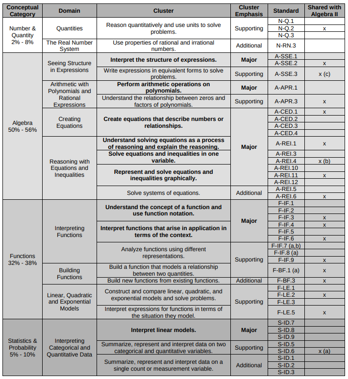

Algebra 1 Standards
The purpose of this page is provide a resource for students to gauge their mastery of the essential Common Core Standards for High School Algebra 1.
For each standard, all state assessment questions will be provided as well as links to resources for how to solve that particular problem.
The table below shows the approximate percentage of questions on each exam, separated by domain and standard. Those marked "major" are the core skills that students must master and comprise between 56% and 73% of the available points on the exam.

Major Standards in Algebra 1
- Interpret the structure of expressions (A-SSE.1&2)
- Perform arithmetic operations on polynomials (A-APR.1)
- Create equations that describe numbers or relationships (A-CED.1-4)
- Understand solving equations as a process of reasoning and explain the reasoning (A-REI.1)
- Solve equations and inequalities in one variable (A-REI.3&4)
- Represent and solve equations and inequalities graphically (A-REI.10-12)
- Understand the concept of a function and use function notation (F.IF.1-3)
- Interpret functions that arise in applications in terms of the context (F.IF.4-6)
- Interpret linear models (S.ID.7-9)
Additional Standards in Algebra 1
- Use properties of rational and irrational numbers (N-RN.3)
- Solve systems of equations (A-REI.5&6)
- Build new functions from existing functions (F-BF.3)
- Summarize, represent and interpret data on a single count or measurement variable (S-ID.2&3)
Supporting Standards in Algebra 1
- Reason quantitatively and use units to solve problems (N-Q.1-3)
- Write expressions in equivalent forms to solve problems (A-SSE.3)
- Understand the relationship between zeros and factors of polynomials (A-APR.3)
- Analyze functions using different representations (F.IF.7-9)
- Build a function that models the relationship between two quantities (F.BF.1)
- Construct and compare linear, quadratic and exponential models and solve problems (F-LE.1-3)
- Interpret expressions for functions in terms of the situation they model (F.LE.5)
- Summarize, represent and interpret data on two categorical and quantitative variables (S.ID.5&6)